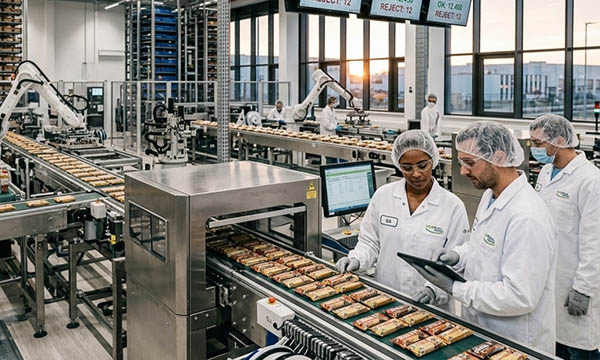

The food industry is one of the most strictly regulated and socially important sectors in the world. In Germany, as well as in France, Italy, Switzerland, the United Kingdom, Norway, Austria, Poland, and the Benelux countries (Belgium, Netherlands, Luxembourg), food production is a key pillar of economic stability and public health. From raw material sourcing and processing to packaging, cold storage, and distribution, every step in the production chain must comply with strict hygiene regulations, food safety standards, and traceability requirements.
Modern food production facilities operate under comprehensive regulatory frameworks such as HACCP and EU food safety legislation. These systems require structured workflows, precise documentation, and clearly defined production zones to prevent contamination and ensure consumer safety. In such controlled environments, industrial signage, hygienic labels, machine labels, safety signs, warning decals, industrial plates, type plates, rating plates, barcode labels, QR code labels, cable markers, asset tags, and CE marking plates play a critical role in maintaining order and compliance.
At SignXpert, we provide high-quality, customizable signage and labeling solutions designed specifically for the food industry in Germany and across Europe. Our products are engineered for durability, clarity, and regulatory compliance, helping food manufacturers maintain safe and efficient operations.
The Food Industry in Germany and Key European Markets.
Germany is one of Europe’s leading food producers, with strong sectors in meat processing, dairy production, bakery manufacturing, beverage production, and packaged goods. At the same time, France is renowned for dairy and agricultural exports, Italy for processed foods and specialty production, Switzerland for precision and premium food manufacturing, the United Kingdom for large-scale processing and packaging facilities, Norway for seafood and cold-chain logistics, Austria for dairy and meat production, Poland for rapidly expanding export-oriented processing plants, and the Benelux region for its central role in European food logistics and distribution.
Across all these countries, strict inspections and regulatory oversight require clearly marked facilities. Production zones, hygiene areas, storage rooms, machinery, and logistics centers must be clearly identified with durable and legible industrial signage. Professional labeling systems ensure consistent standards across multiple sites and support compliance with both national and European regulations. SignXpert supports food producers throughout Germany while delivering quickly and reliably to France, Italy, Switzerland, the UK, Norway, Austria, Poland, and the Benelux countries.
Hygiene Requirements and the Role of Professional Labeling.
Hygiene is the foundation of food safety. Even minor deviations in sanitation procedures can result in serious health risks and costly recalls. Production facilities must clearly separate raw material handling areas from finished product packaging zones to avoid cross-contamination. Employees must follow strict cleaning, storage, and handling procedures, and these procedures must be visibly communicated throughout the facility.
Clear and durable hygiene signage ensures that staff are constantly reminded of proper handwashing procedures, allergen warnings, storage instructions, and sanitation requirements. Machine labels and industrial engraved plates identify equipment and cleaning protocols, while safety decals and warning signs mark temperature-sensitive storage and restricted areas. In Germany and throughout Europe, labeling systems must withstand moisture, steam cleaning, temperature fluctuations, and exposure to cleaning chemicals while remaining fully legible during inspections.
SignXpert manufactures hygienic labels, stainless steel industrial plates, engraved type plates, and durable food-safe stickers designed for demanding production environments. Our solutions support regulatory compliance while maintaining a clean and professional appearance in food processing facilities.
Logistics, Storage, and Traceability in the Food Supply Chain.
Efficient logistics and full traceability are essential in modern food production. Every batch must be clearly identifiable from raw material intake to final delivery. Barcode labels, QR code labels, warehouse signage, pallet labels, rating plates, and asset tags help companies track products throughout the supply chain and ensure accurate documentation.
Proper labeling simplifies inventory management, supports expiration date monitoring, and ensures that storage conditions are clearly defined. In the event of a product recall, clearly structured labeling systems enable rapid identification and withdrawal of affected goods, protecting both consumers and brand reputation. Across Germany’s large-scale factories, Norway’s seafood logistics centers, Poland’s export facilities, and the Benelux distribution hubs, reliable labeling systems reduce errors and improve operational efficiency.
Industrial machine labels and engraved identification plates also simplify maintenance and technical inspections in France, Italy, Switzerland, Austria, and the United Kingdom. Clear marking ensures that equipment can be serviced quickly and correctly, minimizing downtime and maintaining consistent production quality.
Sustainability and Long-Term Production Reliability.
Sustainability has become a central focus within the European food industry. Germany and other major European markets are investing heavily in energy-efficient processes, transparent supply chains, and reduced material waste. Organized production environments supported by professional industrial signage contribute directly to these goals by creating structured workflows and minimizing operational disruptions.
Durable machine labels, industrial plates, safety signage, and warehouse marking systems help maintain long-term operational clarity. When equipment, storage areas, and logistics pathways are clearly identified, production processes run more smoothly and resources are used more efficiently. High-quality labeling solutions reduce the need for frequent replacement and support long-term cost control.
SignXpert provides robust and long-lasting engraved labels, CE marking plates, machine decals, cable markers, and industrial signage tailored for sustainable and future-ready food production facilities.
Why SignXpert is the Reliable Partner for Food Industry Labeling in Germany and Europe.
SignXpert is a trusted supplier of industrial signage, hygienic labels, machine labels, food-safe stickers, cable markers, barcode labels, QR code plates, type plates, industrial engraved plates, rating plates, safety decals, and CE marking plates designed specifically for the food industry.
Our primary focus is Germany, while we also provide fast and reliable delivery across France, Italy, Switzerland, the United Kingdom, Norway, Austria, Poland, and the Benelux countries. With our user-friendly online ordering system, food producers can easily customize signage and labeling solutions to meet their exact operational requirements.
Our products are built to withstand moisture, temperature fluctuations, frequent cleaning cycles, and mechanical stress. Competitive pricing, rapid production, and consistent quality make SignXpert the ideal partner for food manufacturers seeking durable and compliant labeling systems.
By choosing SignXpert, companies in Germany and across Europe gain access to professional, long-lasting, and regulation-compliant industrial labeling solutions that support food safety, improve traceability, simplify inspections, and ensure efficient production throughout the entire food supply chain.